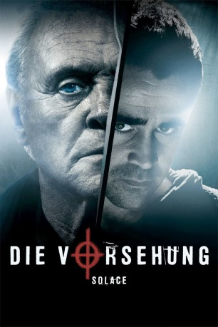
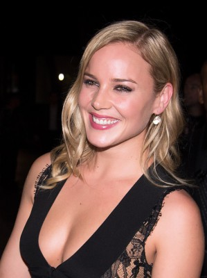
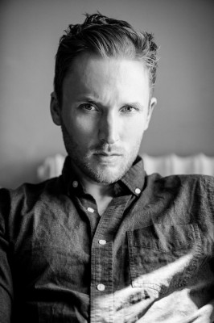
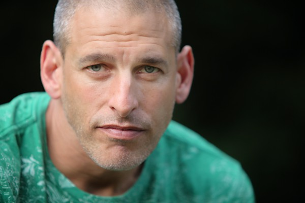
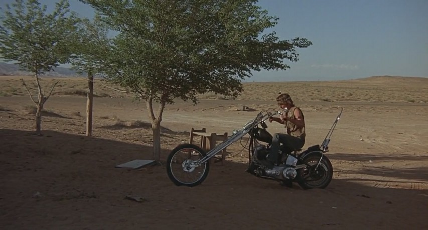
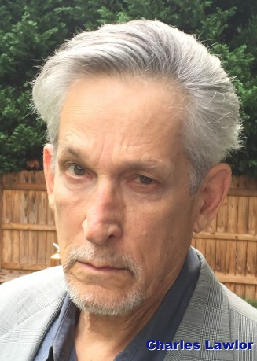

#3098 Die Vorsehung
Alternativ: Solace
 
 IMDB-Wertung: 6.4 / 10
IMDB-Wertung: 6.4 / 10  Metascore: 36
Metascore: 36 
Obwohl er sich nach persönlichen Schicksalsschlägen längst zur Ruhe gesetzt hat, lässt sich Psychiater Dr. Clancy von dem FBI-Mann Merriweather überreden, sich an der Aufklärung einer mysteriösen Mordreihe zu beteiligen. Clancy hat seherische Fähigkeiten und liefert tatsächlich wertvolle Hinweise, auch wenn Merriweathers junge Kollegin Katherine große Zweifel hat. Der Fall nimmt eine ungeahnte Wendung, als Charles Ambrose auftaucht - ein verdächtiger Mann, der ebenfalls seherische Fähigkeiten besitzt.
Jahr: 2015
Dauer: 101 Minuten
FSK: 16
Land: USA Studio: Relativity StudiosTonspuren: DTS - ,
Untertitel: Deutsch,
Auflösung: 1080p (1920x800) Größe: 5939 MB
Genre: Thriller, Mystery
Regisseur: Afonso Poyart
Drehbuch: Sean Bailey, Ted Griffin, James Vanderbilt
Soundtrack: BT
Darsteller:
 Anthony Hopkins als John Clancy
Anthony Hopkins als John Clancy Jeffrey Dean Morgan als Agent Joe Merriwether
Jeffrey Dean Morgan als Agent Joe Merriwether-  Abbie Cornish als Agent Katherine Cowles
 Colin Farrell als Charles Ambrose
Colin Farrell als Charles Ambrose Matt Gerald als Agent Sloman
Matt Gerald als Agent Sloman Jose Pablo Cantillo als Agent Sawyer
Jose Pablo Cantillo als Agent Sawyer Marley Shelton als Laura Merriwether
Marley Shelton als Laura Merriwether Xander Berkeley als Mr. Ellis
Xander Berkeley als Mr. Ellis- Kenny Johnson als David Raymond
-  Joshua Close als Linus Harp
- Sharon Lawrence als Mrs. Ellis
- Janine Turner als Elizabeth Clancy
- Luisa Moraes als Victoria Raymond
 Jordan Woods-Robinson als Jeffrey Oldfield
Jordan Woods-Robinson als Jeffrey Oldfield- Niyi Oni als Agent Fibbie
 Autumn Dial als Emma Clancy
Autumn Dial als Emma Clancy- Tara Arroyave als Waitress
 Rey Hernandez als Dog Cop
Rey Hernandez als Dog Cop- Frank Brennan als Minister
- Jake Lawson als Sketch Artist
- Keith Ewell als Officer Mosley
 Kresh Novakovic als Captain Peterson
Kresh Novakovic als Captain Peterson- David Weiss als Officer Waxman
- Christopher Beanland als SWAT Lead
- Russell Durham Comegys als SWAT Shooter
-  Adam Boyer als SWAT Team Captain
- Kenesha Bolton als Pedestrian on Train , uncredited
 Becky Boyd als Relative at Funeral , uncredited
Becky Boyd als Relative at Funeral , uncredited- Bobby Burks als Paramedic , uncredited
 Frederick Carpenter als FBI Agent , uncredited
Frederick Carpenter als FBI Agent , uncredited- Shelton Foreman als Police Officer , uncredited
- Malina Germanova als Frightened Woman , uncredited
- Angela Kerecz als Prostitute , uncredited
- Rob Koebel als Businessman on Train , uncredited
- Drew Lamkins als FBI Agent , uncredited
- Matt Leddo als Bruce , uncredited
- Shaheed Malik als Police Officer , uncredited
- Joey Phillips als Pathologist Assistant , uncredited
-  Timothy Scott als FBI Agent , uncredited
- Jeff Strickland als SWAT Officer , uncredited
- Carter Godwin als Kevin Merriwether
- Adam Drescher als Beat Cop
-  Charles Lawlor als Pathologist
- Jeff Dandurand als Dreg , uncredited
- Mallory Haller als Funeral Attendant , uncredited
- Michael He als Neighborhood Kid , uncredited
- Austin Huffmaster als Robert Ellis , uncredited
- Debi Kimsey als Abused Wealthy Woman , uncredited
- Scott Ledbetter als Police Officer , uncredited
- Spring Leshiek als Stanford Graduate , uncredited
Datei: X:\2015(N-Z)\Vorsehung, Die (2015, FSK16, 1920x800).mkv seit 26.01.2016
Festplatte: HD 2015(A-Z)
 Es gibt insgesamt 161 Filme in der Gruppe '2015(N-Z)'
Es gibt insgesamt 161 Filme in der Gruppe '2015(N-Z)'